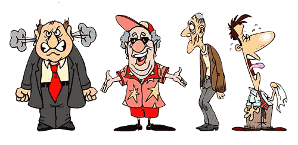

Who are You?
Интересно узнать кто есть кто?
А еще интереснее понять, кто есть ты сам.

Чем флегматик отличается от холерика и кем, например, лучше быть — меланхоликом или же сангвиником? А еще интереснее понять, кто есть ты сам. После этого начинаешь смотреть на мир другими глазами. Темперамент ведь определяет особенности поведения человека.
Это немного похоже на гороскоп, когда вы читаете про свой знак зодиака и находите сходство. Но тут все наоборот.
Нужно прочитать описание всех темпераментов и понять, к какому вы ближе всего (пройти простейший логический тест).